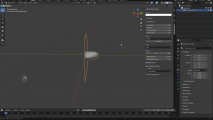

Mesh Cleaning tool
Comprehensive Guide, Sept 19, 2025
The basics:
Firstly import the 3D scan into blender, this file needs to be saved as a type such as .stl, .obj or .glb.
The scan may need to be re-oriented or rescaled when imported, luckily this is quite easy to do in blender.
To rotate the scan, select the object by clicking on it and press ‘R’ for rotate to freely rotate it. To select a specific axis of rotation, press either ‘X’, ‘Y’ or ‘Z’ to lock the rotation to have the scan facing upwards.
To scale the mesh correctly, press ‘S’ using the same method.
Cleaning the mesh:
When a 3d scan is taken, background information of the environment will also be scanned. This script has been designed to easily remove unnecessary information by users inexperienced with 3D modelling software. This process works by adding a cube into the scnene and using the intersection between the cube and the undesired mesh to clean the model.
To add a cube, press the ‘Add Cube’ button. Use ‘S’ to scale the cube to the desired size and ‘G’ to move it to the desired location.

Next, select the 3D scan of the limb and the cube in the selection area below using the eyedropper tool. Once selected press the ‘Apply Boolean Modifier’ button to clean the mesh.

Asessing Mesh Quality:
After cleaning the mesh, the quality of the mesh can be assessed to see if the scan can be used further.

This algorithm will look at the normals of neighbouring faces and measure the internal angle between them using the dot product of the vectors, these values are then calculated into an average and standard deviation to easily assess mesh quality, which are combined into a ‘score’.
A threshold value can also be selected to visually show where the program is detecting jagged edges so that the user can focus on these areas when taking future scans.